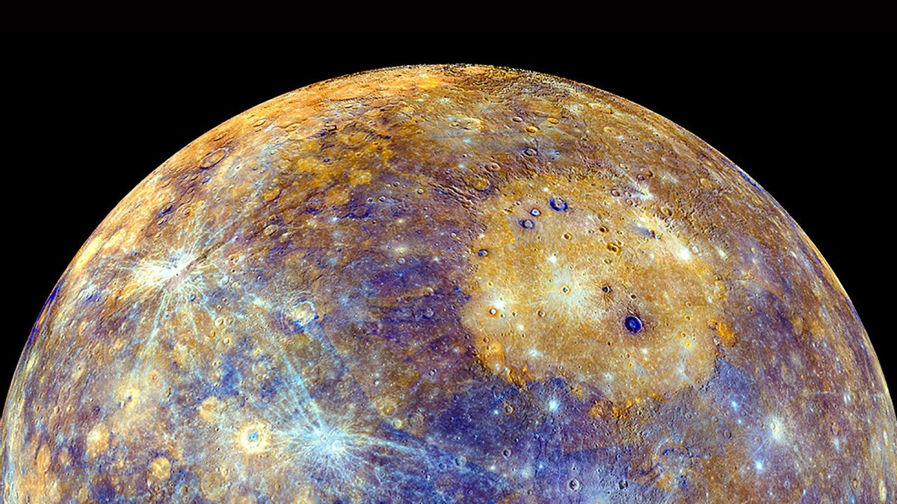
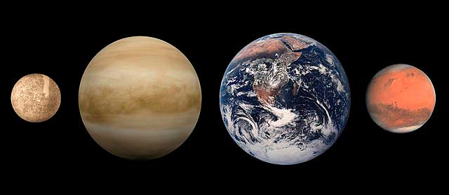
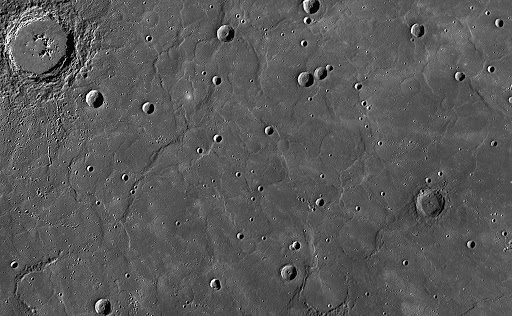
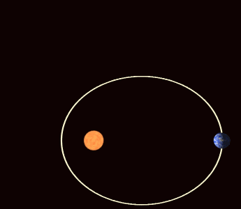
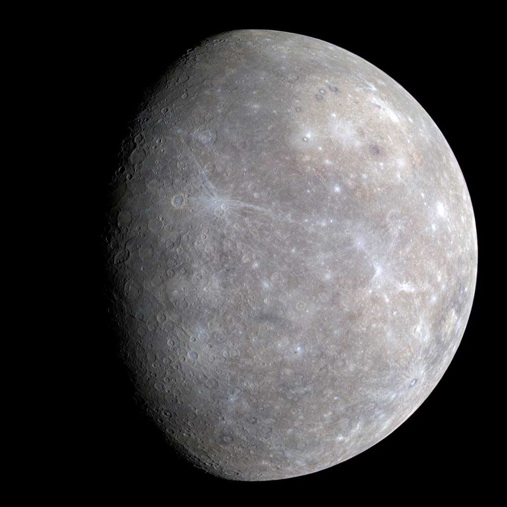

Меркурий - маленький и быстрый

Меркурий – первая по счёту от Солнца планета Солнечной системы, одна из четырёх, входящих в Земную группу. После лишения статуса планеты Плутона в 2006 г. Меркурий оказался самой маленькой из планет.
Он назван в честь одноименного римского бога, который соответствовал греческому Гермесу. У германцев Меркурий именовался в честь бога Одина, а у древних египтян – в честь Гора или Сета.
Радиус Меркурия – около 2440 км. (менее 0,4 от радиуса Земли). Его объём и масса составляют лишь чуть более 5% земных. Плотность планеты примерно такая же, как у Земли.

Меркурий обладает крупным железным ядром, составляющим 83% от объёма планеты. По диаметру оно примерно равно Луне. Современные данные указывают на то, что железо ядра находится не в твёрдом, а в жидком состоянии. Ядро создаёт вокруг Меркурия магнитное поле, чья напряжённость примерно в 100 раз меньше земного.
Меркурий почти не имеет атмосферы – отсюда необычайно резкая разница на нём дневных и ночных температур. У него почти не имеется и наклона оси – значит, не существует и смены времён года.

Спутников у Меркурия нет.
Из всех планет Меркурий движется вокруг Солнца по самой эллипсовидно вытянутой («с наибольшим эксцентриситетом») орбите. В перигелии (точке наибольшего приближения к Солнцу) его расстояние до светила составляет ок. 46 млн. км. (примерно 0,31 астрономических единицы). В афелии (точке наибольшего удаления) оно увеличивается в полтора раза – до 69,8 млн. км. (0,47 а. е.). Орбита Меркурия к тому же постоянно меняет свой «угол» расположения к Солнцу (см. рисунок ниже). Это так называемое «смещение меркурианского перигелия» противоречит законам Ньютона. Объяснить его оказалось возможным лишь после создания Эйнштейном общей теории относительности – и это смещение стало одним из важнейших её подтверждений.

Полный оборот вокруг Солнца Меркурий совершает примерно за 88 дневных дней – такова длительность меркурианского года. Вращение этой планеты вокруг своей оси самое медленное во всей Солнечной системе. На один такой оборот Меркурию требуется более чем 58 земных дней (две трети его года). Это – продолжительность его звёздных суток. Однако вместе с вращением вокруг оси Меркурий совершает обороты вокруг Солнца, во время которых также меняются «дневные» зоны – те, что в данный момент обращены к светилу. Сумма этих двух движений приводит к тому, что солнечные сутки на планете (то есть продолжительность дня от восхода до заката для наблюдателя, который находился бы прямо на ней) составляют 176 дневных – два меркурианских года. Это уникальный для Солнечной системы случай!
Существует гипотеза, что Меркурий в прошлом был спутником планеты Венеры. В ранний период своей жизни он испытал столкновение с большим небесным телом, которое оставило след – ударный кратер Равнину Жары диаметром около 1500 км.
Меркурий – история изучения и исследований
В связи с близостью Меркурия к Солнцу и его слабым притяжением посылка космических аппаратов к нему – весьма непростая задача. Поэтому он исследован хуже многих других планет. Первой приблизившейся к Меркурию станцией был американский «Маринер-10». В 1974-1975 годах он трижды пролетел мимо планеты, сделав снимки почти половины её поверхности.
Вторым посланным к Меркурию аппаратом стал зонд НАСА «Мессенджер». В январе 2008 г. он впервые совершил облёт Меркурия, а в марте 2011 вышел на его орбиту как первый искусственный спутник. При помощи «Мессенджера» была составлена полная карта планеты, исследована её атмосфера, сделаны замеры магнитного поля. В 2015 г. «Мессенджер» упал на Меркурий.
В октябре 2018 г. собственную миссию к Меркурию – «BepiColombo» – запустило Европейское Космическое Агентство. Она доберётся до планеты лишь в 2025 г.
День и ночь на Меркурии
Одно из полушарий Меркурия, в течение длительного срока обращено к Солнцу, из-за его медленного вращения. Поэтому смена дня и ночи там происходит значительно реже, чем на других планетах солнечной системы, да и вообще, практически не заметна. День и ночь на Меркурии равны году планеты, потому что продолжаются целых 88 суток! Так же, на Меркурии характерны значительные перепады температур: днем температура поднимается до +430 °С, а ночью, опускается до – 180 °С. Ось Меркурия практически перпендикулярна к плоскости орбиты, и составляет всего 7° , поэтому смены времен года здесь нет. Зато, рядом с полюсами, наблюдаются места, куда ни когда не проникает солнечный свет.

Дополнительная информация
Масса: 3,3*1023 кг (0,055 массы Земли)
Диаметр на экваторе: 4880 км
Наклон оси: 0,01°
Плотность: 5,43 г/см3
Средняя температура поверхности: –73 °С
Период обращения вокруг оси (сутки): 59 дней
Расстояние от Солнца (среднее): 0, 390 а. е. или 58 млн. км